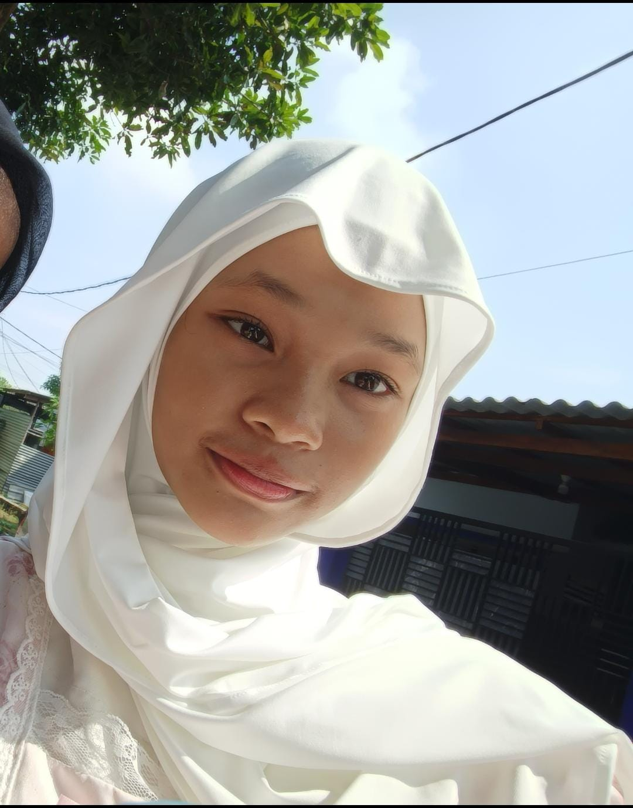
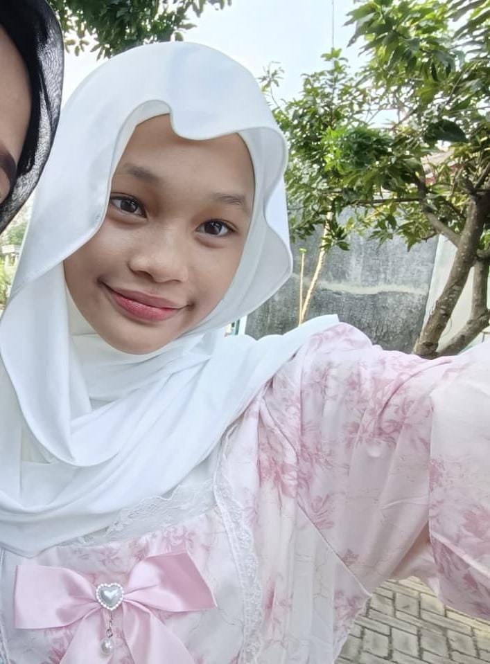

- Nama lengkap
- Griselda Helga Dana
- Kelas
- X RPL 3
- Nomor absen
- 26
- Sekolah
- SMK Krian 1
- Jurusan
- Rekayasa Perangkat Lunak


WELCOME TO MY LITTLE GARDEN
Sedikit kode, banyak rasa ingin tahu.
Selamat datang di tempat ide-ide kecilku tumbuh.

01 / SEHELAl CERITA
Aku Griselda Helga Dana, siswi X RPL 3 di SMK Krian 1. Aku sedang mempelajari dunia pemrograman, dari menyusun tampilan web sampai mencoba logika di baliknya.
Portofolio ini adalah ruang untuk mengenalku dan melihat contoh karya interaktif yang bisa kamu coba sendiri.
JEJAK LANGKAHKU
02 / BEKAL UNTUK BERTUMBUH
Empat bahasa dan teknologi yang sedang kupelajari.
Persentase berdasarkan penilaian diri.03 / TAMAN KARYA
Tiga demo interaktif bertema taman.
Klik, mainkan, dan temukan kejutan kecilnya.
Pilih warna pembungkus dan kartu ucapan untuk merangkai buket digitalmu sendiri.
Temukan empat pasang bunga yang sama. Seberapa sedikit langkah yang kamu butuhkan?
Rawat tunas dengan air dan cahaya sampai tumbuh menjadi bunga lily yang mekar.
SETIAP USAHA PUNYA MUSIM MEKARNYA
Ruang untuk menyimpan sertifikat dan pencapaian.